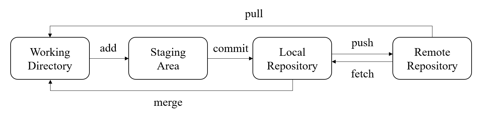
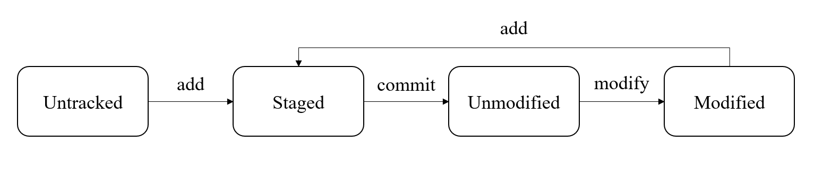

Git 学习笔记
简介
Git 是一个分布式的版本控制系统。分布式版本控制系统相较于集中式有以下特点：
- 可以在本地进行提交、分支，而无需联网
- 每个开发者都有完整的仓库副本，都可以在中央服务器崩溃时恢复整个项目
Git 和其他版本控制系统的主要区别在于，Git 对文件版本的管理并不是基于差异的，而是直接记录文件快照。
而 Github 是一个代码托管云平台，使用 Git 作为底层版本控制工具，允许用户将他们的 Git 仓库托管在云端作为远程仓库，并提供了一系列工具方便开发者间远程协作。
概念
工作区域
Git 的四大工作区域分别是：
- 工作目录（Working Directory）：实际进行代码开发的地方
- 暂存区（Staging Area）：也称为索引（Index），位于工作目录下
.git/index中，用于临时存放未提交的改动 - 本地仓库（Local Repository）：位于工作目录下
.git中，存放完整的项目历史记录 - 远程仓库（Remote Repository）：位于远程服务器上，存放完整的项目历史记录
工作区之间的工作流：

文件状态
Git 中文件的状态分为未跟踪、已跟踪两种，其中已跟踪又细分为未修改、已修改、已暂存三种：
- 未跟踪（untracked）：工作目录中新建的文件，还未参与版本控制
- 未修改（Unmodified）：与本地仓库中一致
- 已修改（Modified）：与本地仓库中不一致且未暂存修改
- 已暂存（Staged）：与本地仓库中不一致但已暂存修改

版本和分支
Git 中每个结点代表一个版本，所有版本及其衍生关系构成描述整个项目历史版本的 DAG
- 结点：仓库每一次更新都会生成一个新结点，每个结点都有一个唯一对应的 SHA-1 哈希值
- 分支：指向任意一个结点的指针，代表一个开发工作流
- HEAD：指向本地仓库当前所处分支的指针，唯一存在
- 标签：指向任意一个结点的指针，是对结点的一种静态标记
指令
创建本地仓库
本地仓库有两种来源，分别是从远程获取或从本地创建
git clone <URL>：将远程仓库复制到本地，并自动创建对远程仓库的引用，命名为“origin”git init：将本地目录作为工作目录创建本地仓库
暂存和提交修改
git add <文件路径>：暂存某一文件的修改git add .：暂存所有文件的修改git commit -m <提交信息>：将暂存提交到本地仓库git commit --amend：往上次提交中补充内容
撤销和回退修改
需要注意撤销任何未提交的修改的行为都是危险的，因为不可逆
git reset HEAD <文件路径>：撤销某文件暂存（从已暂存变为已修改）git checkout -- <文件路径>：撤销某文件修改（从已修改变为未修改/已暂存）git reset <提交>：回退到某个结点--mixed（默认选项）重置 HEAD 和暂存区，但不修改工作目录（仅保留工作目录修改）--soft仅重置 HEAD，不修改暂存区和工作目录（保留工作目录和暂存区修改）--hard重置工作目录和暂存区，完全恢复到目标状态（不保留）
git revert <提交>：创建一个新的提交以撤销目标提交的修改
<提交> 可以是哈希值/分支名/HEAD/标签名等
查看本地信息
git status：查看工作区和暂存区当前的文件状态git log：查看提交历史，--oneline开启简洁模式git diff：比较工作区和暂存区的所有差异git diff <文件路径>：比较某文件的差异
管理分支
git branch：查看所有本地分支，-r查看远程分支，-a查看所有分支git branch <分支名>：创建本地分支git branch -d <分支名>：删除本地分支（可能产生悬空结点）git checkout <分支名>：切换 HEAD 指针位置，同时更新工作目录（但保留修改和暂存），-b创建并切换
拉取远程仓库更新
拉取远程仓库可以使用 pull 或 rebase，其中 pull = fetch + merge，而 rebase 和 pull 的区别在于会将两个分支合并为一条链，使得提交记录更为优雅
git pull <仓库名>：将远程仓库所有分支更新并合并到本地分支，仓库名可省略，使用默认仓库git pull <仓库名> <分支名>：将远程仓库的某一分支更新合并到本地分支git pull <仓库名> <分支名1>:<分支名2>：将远程仓库分支1更新合并到本地分支2git fetch <仓库名> <分支名>：将远程仓库的分支更新到本地仓库git merge <分支名>：将本地仓库的分支合并到当前分支上
推送本地仓库更新
git push <仓库名>：将本地仓库所有分支更新并合并到远程分支，仓库名可省略，使用默认仓库git push <仓库名> <分支名>：将本地仓库的某一分支更新合并到远程分支git push <仓库名> <分支名1>:<分支名2>：将本地仓库分支1更新合并到远程分支2
管理关联的远程仓库
本地仓库只有和远程仓库关联后才可以 pull 和 push，本地仓库中会存储所关联的远程仓库的引用
git remote：查看关联的远程仓库，-v显示 URLgit remote add <引用名> <URL>：关联一个远程仓库git remote show <引用名>：查看远程仓库信息git remote rename <引用名1> <引用名2>：更改远程仓库引用名git remote remove <引用名>：移除远程仓库关联
管理标签
git tag：查看所有现有标签git tag <标签名> <提交>：在某提交上创建标签，提交可省略，默认为 HEADgit tag -a <标签名> -m <标签信息>：创建附注标签git tag -d <标签名>：删除本地标签git push origin :refs/tags/<标签名>：（删除本地标签后）删除远程标签git show <标签名>：查看标签信息git push origin <标签名>：推送标签git push origin --tags：推送所有标签
规范
提交
Git 的提交信息通常按照格式 <提交类型>(<影响范围>): <提交目的> 来填写，其中影响范围可以省略。
提交类型包含以下几种
feat：新功能fix：修复问题docs：文档更新style：代码格式refactor：代码重构perf：性能优化test：添加或更新测试build：构建系统或外部依赖项的更改ci：持续集成相关的变动chore：其他不修改 src 或测试文件的更改revert：回滚某次提交
分支
Git 仓库通常使用“master”或“main”作为主分支，代表稳定的发布版本，其他分支都由主分支产生，最终合并到主分支。
其余的分支包括
develop/...：由主分支产生，用于开发过程feature/...：由 develop 分支产生，用于开发具体功能特性release/...：由 develop 分支产生，用于发布版本前进行最后的测试和更新hotfix/...：由主分支或 release 分支产生，用于修复紧急问题，修复完毕后合并回原分支并删除
.gitignore
Git 仓库根目录下通常有一个文本文件 .gitignore，用于描述不需要跟踪的文件或目录。
.gitignore 使用的语法称为 glob 模式，是一种简化版的正则表达式，通常在 shell 中使用
#表示注释*匹配零个或多个字符**匹配任意多级目录?匹配任意单个字符[abc]匹配方括号中任意单个字符!表示不匹配某种字符串- 开头的
/表示相对根目录的路径，若开头没有/没有则匹配任意位置 - 结尾的
/表示匹配目录而非文件
举个例子：
1 | 忽略 docs 目录下及子目录中除了 Readme/readme 外所有 markdown 文件 |